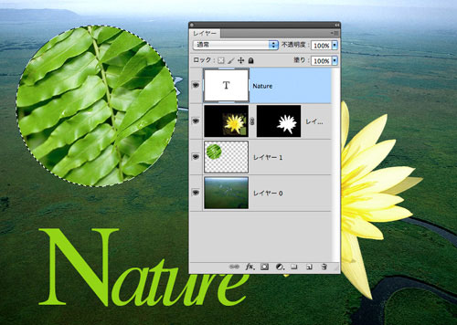
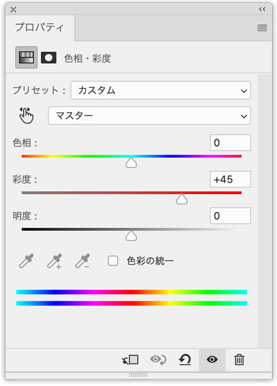
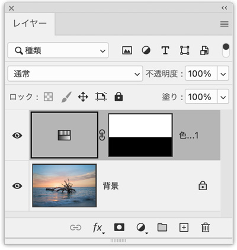

選択ツール以外の選択と微調整
- レイヤーパレットで選択範囲をつくる

レイヤーに切り取られた写真や文字がある場合
［Ctrl］キーを押しながら、レイヤーの「サムネール」をクリックすると選択範囲になります。サムネイル 【thumbnail】
- 多数の画像を一覧表示するために縮小された画像
- 「親指(thumb)の爪(nail)」という意味
- 画像編集ソフトの多くがサムネイル作成機能を持っており、ディスクから読みこむ画像を選択する際などに表示される
レイヤーマスクを使用して写真を部分的に編集する方法
新規調整レイヤー「色相・再度」
- 「彩度」を上げて、鮮やかにします

- 鮮やかに見せたいのは「空」のみで、海は元画像を表示します
- レイヤーマスク内で、「グラデーションツール」で効果の表示・非表示を決めます
